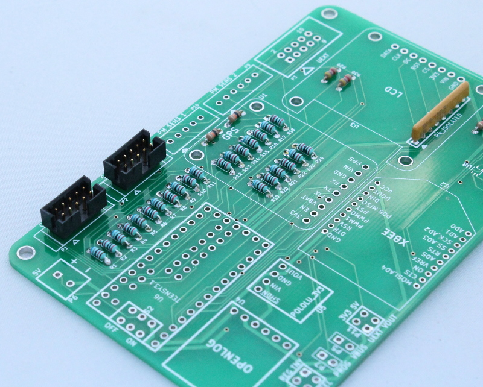
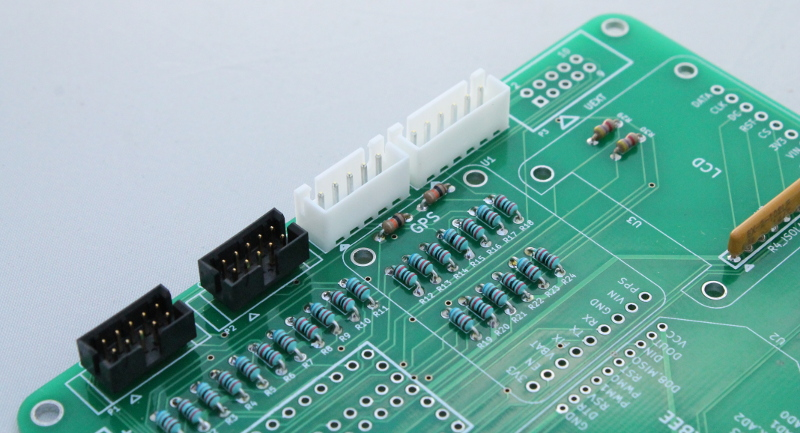
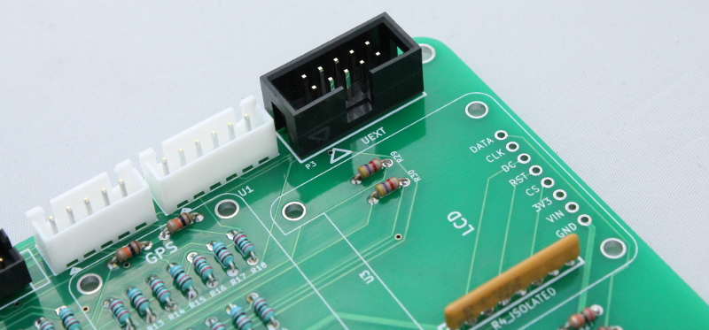

3) Headers for gas, particulate sensors¶
Sensor Headers¶
There are 5 headers available for connecting sensors to the board.
- P1 and P2 - Alphasense Gas sensor headers
- P9 - OPC-N2 Alphasense particulate sensor
- P10 - Amphenol particulate sensor. In the next board revision P10 will be removed and the digital lines can be used for other purposes. May also add a humidity sensor.
- P3 - UEXT general purpose expansion header. Has 12C, SPI and UART. Can also be used as additional analog inputs e.g. for connecting methane sensor.
Solder the headers onto the board as shown in the images below.


